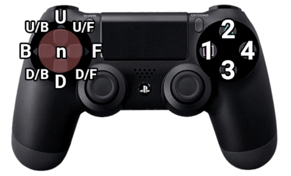

Tekken is one of the most difficult fighting games to learn. Each of the 30+ characters have more than 100 different moves, some even having 200. For a new player this amount of moves can be incredibly overwelming.
This is where Iron Fist Data comes in. On here you can select and Character to see what their best moves are and how to beat them. Additionally you can add counter play that you have found with your own character to deal with a certain move.
Tekken Notation
